|
An Eyewitness Account (Week Two) By : Jeff Head July 24, 2001
Friday, July 20, 2001
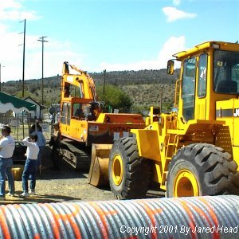 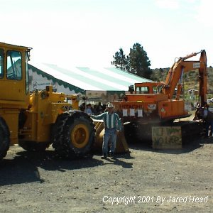 I introduced my son and displayed one of the reasons why I had returned on that day ... our petition had gathered its initial 10,000 signatures two days before and true to the commitment on the petition, I was going to present those 10,000 signatures to the local government officials. We had been trying to get there in time to ride in the Horse Brigade that would be coming over the hill behind the head gate. Our friend Bill and his son James were holding two horse for us. Unfortunately, we got there just as the first riders were assembling at the top of the hill ... too late to ride, but not too late to swell with pride!
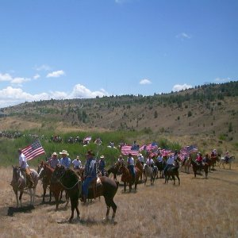 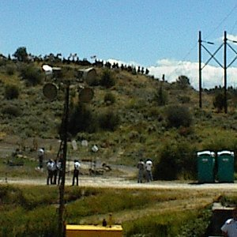 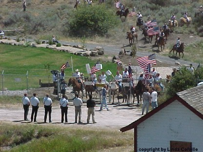 The riders formed up and came from behind the hill which was in back of the head gates. They then gathered on the ridge and then snaked their way down the hillside to gather in front of the rear gates where the Federal Marshals had made their entry just under a week earlier. About 150 horses, most of them carrying US Flags, many of which were turned upside down to signal the great distress to property, livelihood and liberty represented by a reprehensible unilateral decision by government gone out of control to turn off irrigation waters to farmers who own the rights to that same water. Water from a lake that was built for this very purpose. Deeded over to homesteaders and veterans who toiled and sacrificed for their country and the liberty that all enjoy. The site brought tears to my eyes as I contemplated the work, the vision, the promise of dry parched land irrigated by water which the farmers owned ... and those tears turned bitter by a betrayal of the highest order by the very government many of these people themselves had fought to defend. My son, Jared took the camera and became the cameraman for the next three days. He took most of the pictures making up this second installment in the eyewitness account of the stand at Klamath Falls. The entire area had changed since the momentous events of the Sunday before. The crowd had grown. The accommodations for that crowd in terms of tents and sound systems and food had grown. But the spirit remained, as evidenced by the Horse Brigade and its ride down the hill behind the head gates.
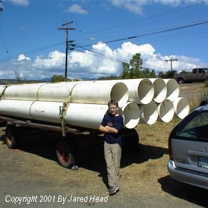 Large diameter PCV pipe and heavy equipment bore unmistakable testimony of these farmers intent to have their water rights, to feed their land, to grow food for the nation like their fathers, and their fathers before them. Pitted against this ... the continued presence of armed Federal Guards standing between these loyal American farmers and their water. US Park Service Police from the Department of the Interior. Federal Police whose jobs it is to be the point end of the sword to enforce a decision which is destroying 1400 American families and their livelihood ... their very way of life. We continued to talk to these men. We continued to try and impress upon them the need to mark well their presence here ... their job here. To consider when too many families would, "be enough". Again, would it be 5,000? 10,000? ... 50,000? Would they continue to "just do their job" if ordered to round up these people and herd them into the irrigation ditch and shoot them? Tyrannical governments do not start with the rounding up and shooting of citizens ... they start with the marginalizing of different classes of people, the driving them off the land into poverty, the dictate of livelihood and career. These officers need to understand the path they are on and the role they play. If the "policy makers" had no one who would execute their increasingly reprehensible and tyrannical "decisions", then they could not advance their agendas.
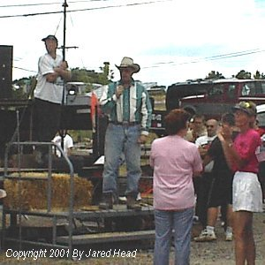 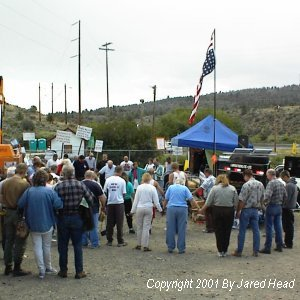 I spoke of this a few moments later when I was given the chance to speak to those gathered and announce the fact that the next day the petition would be delivered to the Sheriff at 5:30 PM. I was then asked to lead several of these fine folks in a prayer for their efforts, their water and their liberties. There was some talk by those who had arrived after the momentous events of the prior weekend of "stepping back", "calming down" and so forth. I spoke against this. What was occurring here was the result of the brave and committed actions of a few ... a few who would not compromise their fundamental rights. I indicated that it was my impression and intent that such and attitude must continue. Pump more water around ... keep driving home the point that fundamental rights are not up for arbitration or compromise. When you compromise fundamental rights ... you lose them. The entire history of this event was a testament to that fact.
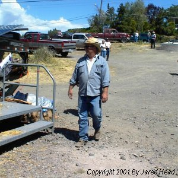 After this, and through the day, we spoke with Bill and his son James, with Barron, Grant, Bob, Danny, Joey, Gavin, Barbara, John and the many other farmers I had come to know and respect from last weeks experiences. In addition, through the day several individuals from the FreeRepublic web site, a site where constitutionally oriented people gather online to speak and get active in current events, either arrived or came up and introduced themselves. It was good to see so many folks I’d conversed with, a few whom I had been involved with other activities with. Some of these included Washington_Minuteman, Phil V., Jolly Rogers, Socks, B4Ranch and several more.
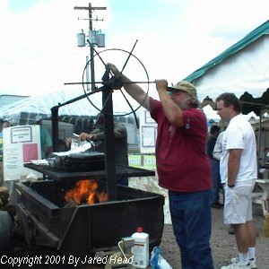 A wonderful meal was served to any there in support of the farmers. It was very tasty and the local folks were so good about feedning the rest of us. Good food, good comapny ... too bad in this case it was trying circumstances.
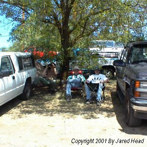 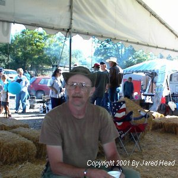 A little after this, a good friend, Tom Farenkopf from Montana showed up. Tom is the owner of OughtSixWear, an online T-Shirt shop that caters to 2nd amendment buyers. He and I sat and talked and then I introduced him to Mike, Washington_Minuteman from FReeRepublic.
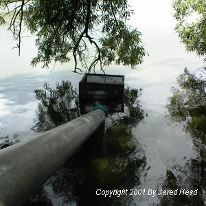 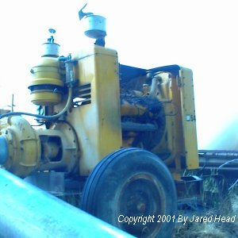 My son, Jared, and I were asked to take our turn at Guard Duty up by the pump which was sending water down the 8" irrigation line we had helped install the week before. Right at the location from the tense and memorable events of the prior week where fifty towns and local people stood in defense of two farmers who were preparing that very pump. We of course accepted. Our shift was from 10 PM until midnight. We were designated Fox-2 and our base was Fox-1. I was tasked with manning the hand held radio. My son and our good friend, Mike (Washington_Minuteman of the FreeRepublic web site) who had arrived from Washington to show his support, were to be on the lookout for any problems with the pump, or the approach for any who might otherwise cause mischief. Outside of any emergency, we were to check in every 30 minutes and then were to be relieved at midnight. At 10:30 PM the call went out.
Sentry: "Fox-1 base, this is Fox-2 pump house ... come in." Realizing that our communications may well have been monitored, we made sure a couple of our communications were in fact mis-communications to keep whatever other listeners there might have been out there on their toes. From 11 PM
Sentry: "Fox-1 Base, this is Fox-2 pump house ... come in." About 11:15 PM a few teenagers walked by on their way down to the lake. We greeted them as they passed and they were congenial and interested in how things were going. A few minutes later, it was time for another check in, and some more mis-communication.
Sentry: "Fox-1 base, this is Fox-2 pump house ... Come in." Just before 12 PM we were relieved, and then we slept there, outside the head gates just like a smaller number of us had done the week before. This time we were not allowed in and the soothing sound of water flowing in "A" canal through the head gates was absent.
Saturday, July 21, 2001 A GREAT breakfast was served by the wonderful ladies who volunteered to provide those services for the farmers and those supporting them. Eggs, bacon, orange juice, biscuits. Things got off to a relatively quick start. The Mayor of Klamath Falls came to the site and talked with a number of individuals. I introduced myself and gave him a copy of the 10,000 signatures. Although he wasn’t officially on the list, I felt this mans support would be critical and wanted to insure that he knew what type of "outside influence" existed at the camp. I informed him of the petition, its history and that there were probably 9,000 of the 10,000 signatures there who were "outside influence" who were expressing their support for the farmers near and in his community ... and exercising their 1st amendment rights under the Constitution to seek change from their government on these issues. He accepted the petition and indicated he would present it to the City Council. I asked him to please read the comments from all over the nation ... from every state.
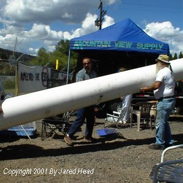 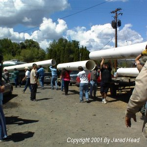 In an effort to continue to show the resolve and determination to get more water to the farmers, we began unloading a trailer of 18" PVC pipe along the fence line right next to the 8" pipe which continued to transport water down to the canal, around the head gates and the federal officers. Soon, more water must flow, and in quantities that could help any farmer so inclined to put in late hay and water their livestock.
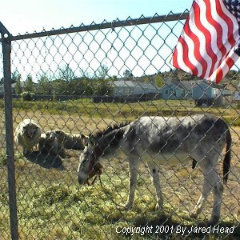 We had no pump for this pipe, and no material to put it together, we did it in an effort to make a statement ... no water was intended to flow through it. While doing so, our efforts served as an effectual diversion. All of a sudden, about a hundred and fifty feet up the way, the pad lock on one of the larger gates providing access into the "compound" somehow fell apart (must have been old and rusted through) and a number of sheep and a jack-ass ran in there to join the Federal Police. The Federal Police (US Park Service Police) had to dispatch a couple of their numbers to "herd" the animals. This was not a job they were trained for, disposed towards ... or very good at. Nonetheless, within a few minutes, the sheep and jack-ass had been herded down the canal a ways and away from the head gates. About this time, two rowboats approached the gates from the lakeside of the gates. There is a walkway across the inlet that leads to the gates and as the rowers pulled the rowboats across this walkway the Park Police informed them that they were entering the "Federal Area" and they would be subject to arrest. They pulled the boats over and rowed right up to the head gates. When they could touch them, they waved to the Park Police busy videoing them ... and then rowed away. All the while, US Park Police were video taping these protestors from the bank above the inlet to the gates.
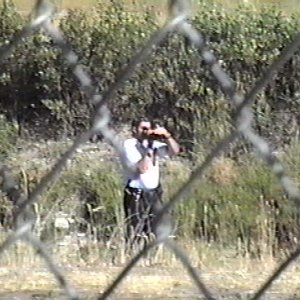 Later in the day, we had our first "fence jumper". An individual from the crowd, wearing a red shirt and cap, jumped the fence. AT first the Park Police didn't see him ... but then he began waving his arms and yelling and they noticed someone had crossed the "line of incarceration". Two officers walked toward him and he ran off down the canal and crossed to the other side ... putting well over a hundred yards between himself and the Federal officers. Then two more got in a car and began driving along the canal road on that side. The individual crossed the canal again and disappeared around the bend. About a half hour later, what was thought to be this individuals twin brother was walking around in the crowd, wearing a different shirt and no hat ... trouble is, he had no twin brother. The individual jumped the fence again. This time, he was cornered on the lake side of the gates and two officers approached him over nearer to the gates. When they approached and indicated he was under arrest, this person simply said, "No I'm not", turned around and jumped into the lake. After exchanging a few pleasantries with the Police, one of the police indicating that the water was very slimy and he should swim to them so they could take him out and take him to a clinic for some shots ... the individual simply swam away.
The Conversation with the BOR Official A large white government issue sedan arrived and a lady in a purple pant suit and a man with what I call "hair dresser" hair and wearing a fine, casual safari outfit arrived. Myself and several others standing at the fence saw them standing there. The man went behind the pump house with the Park Police Lt. (the agent in charge) and began talking. The lady, middle aged, stood there and we waved to her. She waved back. We beckoned for her to come to the fence and talk to us. To our surprise, she went behind the pump house and in a few seconds, the Lt., this woman and the gentleman came walking towards us. As he did so, some of the folks in the crowd indicated that they believed this was the head of the entire Northwest Region for the BOR. The entire crowd moved to the fence at this announcement and a feeling of expectation spread over all of us. "Maybe this is it", some said, "I wonder what concession he's going to give us", others commented. When the BOR official arrived at the fence he started off by telling us all that he was there to improve relations and open a dialog with those present. He spoke clearly, but softly. He indicated that the BOR had always worked, for over 90 years with and for the farmers. He then said that the BOR had always regulated the flow of it's water to the farmers, and that it had always provided the BOR's water to the farmers. Everyone there heard it. The people were incredulous. He lifted up some papers or documents he was carrying. As he did so, he indicated that he, "wanted to share these with us as an indication of his desire to open the dialog and improve understanding" He then began opening and offering BOR calendars to those of us at the fence! The impact on the crowd was immediate and beyond belief. The very idea that calendars ... what some began to call "trinkets" ... would be offered quickly went from incredulity to frustration to anger. One of the farmers standing next to me, a large, hard working, man, exclaimed an oath in a statement to the BOR official in his frustration. This evoked a response from the Lt., who stepped forward, pointing at the farmer and said, "You! Shut Up!" The farmer was having nothing of it. He stepped to the fence and pointed his own finger at the Lt. and said, "NO! YOU shut up!" The farmer went on to indicate that he was right there and the Lt. could cross the fence at any time. The rest of that discussion was drowned out in the multitude of questions, yells and exclamation being made by the crowd in general now. I watched the BOR official while this was going on. He was clearly taken back, almost that "Deer in the headlight" look. It was patently obvious that he was unprepared for the emotion of the crowd, which was driven by the impact of administrative decisions regarding these people's water and livelihood. It was like he was from a different world ... he was. He was from the world of corporate boardrooms and plush conference rooms. Where things like Calendars spoke volumes to lobbyists and those making political deals. In this world, where the rubber met the pavement ... where the labor met the land ... such sentiments counted for exactly nothing. One of the farmers near me got the crowd settled down somewhat. I asked the official if the water rights didn't in fact belong to these farmers who had the deeds to the land that was a part of the project. He admitted they did. He continued talking about the "unfortunate" decision regarding the water and its impact on these people. He said that the law "had no conscience" and that it could not distinguish "between a fish and a human". This only made the people more frustrated and angry. The idea that such an excuse would be used to these folks face when they all knew that people, with consciences and who could distinguish the difference had to administer the law, or "act". At one point as many questions were being asked I had the editor for the SierraTimes, J.J. Johnson on the cell phone. On his behalf I asked. Myself: Sir, I have the editor of the Sierra Times here on the line (holding up my cell phone). Folks around here say that yesterday FBI, BATF and other Federal law enforcement officers were here in the crowd and wandering around town. Can you confirm or deny their presence here?This statement proved to later be a pivotal statement. Many of the local farmers and other local citizens began to make comments and shout their comments at this statement. The mood was charged, frustrations and emotions were high. The official recognized (I believe) that his visit had not eased tensions in the least ... in fact it had heightened them markedly. He began to prepare to leave the fence area. He said, "I hear you folks have a petition. That is a good thing, get as many signatures as you can on it." One of the ladies there indicated that we should ask him to sign it. I thought it a good idea ... so I did. Myself: "Excuse me, Sir?"This question was not expected. He thought for a moment, I am sure trying to decide how to respond. BOR Official: I am on work hours. I cannot make a personal statement while I am ... I may on my personal time."This man, the lady in purple and the Lt. then turned and left. Most indicated that he would never show up for dinner ... they were right.
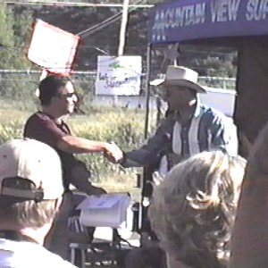
Presenting the Petition to Sheriff Evinger The Sheriff graciously accepted the petition. He commended everyone involved, held it high, and then to cheers from the crowd, stated, "Let's go out and get one million signatures!" After accepting the petition, several of the prominent farmers got with the Sheriff and told him what the BOR official had said about those Park Police only being there because of the Sheriff's request. The Sheriff was not happy with this ... he was visibly upset about it. He indicated that he would then go over there right that moment and request that they leave.
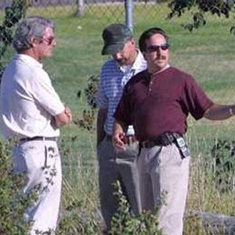 This brought on a huge cheer from the crowd as he stepped to the gate and called for the park Police to let him in. He spoke with the Lt. and the BOR official for a good twenty minutes and then returned. He informed the crowd that he had officially requested that the Federal Officers LEAVE. The cheers could probably be heard in Washington DC (they were) and indicated that he would go back to his office and put the request in writing, get it sent off to Washington, and then bring it back here and read it to the crowd, and present it to the BOR official and the Lt. A little while after the Sheriff left, a small disturbance was noted on the back side of the compound, by the back gate. What appeared to be six US Marshals stepped up to the gate. Yes they appeared to be US Marshals ... they were requesting entry to relieve the US Park Service ... the US Park Service was denying them entry ... what was this?
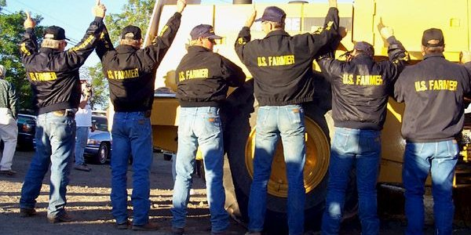 Then, the "Marshals" turned around. Written across the back of their blue coats were these words ... US FARMERS Again ... wild cheering from the crowd. An expectant atmosphere settled over the encampment. Almost everyone waited for the Sheriff to return. He was sometime in coming, but ultimately he did arrive. He said a few words before reading the letters. I held my cell phone up like a microphone and recorded it all for SierraTimes who then placed the entire speech and reading of the letters on the internet for everyone to hear. Basically the Sheriff indicated that his original request had been for the Federal Officers to come and insure the gates were protected. That it was not his intent to support the enforcement of the ESA. He indicated his request had been mis-interpreted. He also indicated that the Federal Officers there had overstepped their bounds and that the safety of the people of Klamath County ... his primary concern ... was more threatened with theses officers present than without them. He again indicated his request for them to leave and indicated it would be a couple of days before an answer could be expected. With this, more great cheers for the Sheriff and he went to the gates and delivered the =written request. While this was occurring inside the "compound" a reporter was present. The word came back from the compound that the BOR official had called his superiors and WOULD NOT be visiting us since he was apparently "on duty" 24X7 until the situation was resolved. This only served to further lessen the regard in which this official was held by those farmers and their supporters. This is the West ... a man's word means something here. With that, many conversations and recounts of the days activities proceeded well into the night. The expectant and hopeful attitude increased all around. About midnight, Jared and I hit our sleeping bags and retired for the night.
Sunday, July 22, 2001
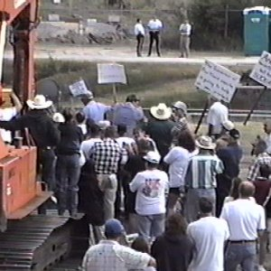 Lots of talk and planning. Plans for what to do when the Federal officers leave ... and what to do if they don’t leave. My recommendation was to get that bypass in either way ... get the water flowin! and insure that the ability to be self sufficient in future crisis is developed. After this, my son and I took a walk across the Lake and down to one of the release dams. A pleasant walk of about 2 1/2 miles each way. We saw all types of water fowl and a doe. We talked about the significance of what was occurring here. I let him know that this was a bad example of how our government was supposed to work ... that the government had been meant to be small and unobtrusive but over the years had grown into a beast of almost overwhelming proportions ... one that would reach out and destroy entire valleys full of people. I also indicated however my pride in the folks here and how humbled I was to be amongst them in this stand. This also represented the spirit that made this nation great in its citizens. Citizens willing to stand firm and resolute against a creeping tyranny. I told him I felt we may yet win this fight and set a pattern and example for other fights sure to come in the future. My son, in all of his eleven years, summed it up completely with a, "Dad, the farmers need the water. it's theirs and they should be allowed to use what's theirs as they see fit to grow their crops." More pride ... this time a little different variety.
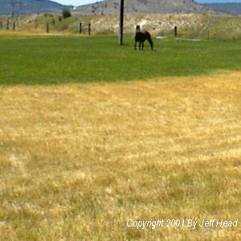 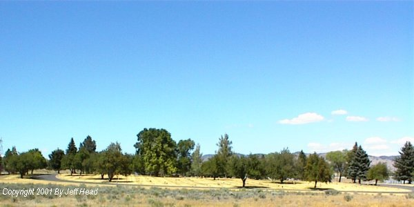 When we returned, I took the opportunity to recite the lyrics to a song I had come up with the last week as I drove back home. A few of the folks liked it and asked me to get the words printed up. Jim, Bill's son, wanted me to get a picture of a particular field where a farmer had been to get a little water to it, but only a small coverage. He indicated that the contrast was extreme. We went to do so with the idea that we would get several copies of the lyrics while out and all sing it when we returned. That pasture did make for an excellent contrast of what water means to these folks. In addition, it provided me with the opportunity to take a good picture of the local cemetery, where many veterans are buried. Veterans who sacrificed and fought for the freedom to farm ... to use their water rights in their chosen livelihood. The picture speaks volumes to the betrayal by the government these individuals fought to protect. What should be green and vibrant at this time of year surrounding their graves ... is brown and withered. Returning, the words were handed out and a woman with a beautiful voice and a talent on the guitar had put the chords to it. Here is what we sang: The Stand at Klamath BasinAfter this, Jared and I had to go. Jared had a scout camp the next week starting at 5 AM the next morning and we were already late getting away.
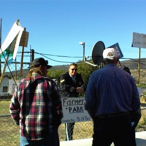 I walked up to the Sgt. and the Lt. who were standing by the gate. I shook their hands and indicated that it was my sincere hope that they would not be there the next time I was able to come to Klamath ... that the farmers here would again have what was rightfully theirs and that there would be no armed government guards to keep them from it. The Lt. indicated that this was also his hope. Myself and the farmers I had been involved with said our good-byes once again. I was sad to leave them and their ongoing struggle. I indicated my desire to return as soon as that bypass work was started, and when we reached the 100,000 signature mark on the petition in any case. The decision on the bypass will wait until the decision by the U.S. Department of Interior, to be made by Secretary Gale Norton later this week ... the same individual who indicated she "agonized" over the decision closing the water in the first place back in April. Agonizing she said ... very agonizing ... how agonizing can it be to shut someone else's water off from 3000 miles away where the decision maker has plenty of water? Nonetheless, the efforts by these courageous folks will always rest well in my soul as I contemplate liberty and what is required to maintain it.
POST SCRIPT 1 - Tuesday, July 24, 2001 - Decision by Gale Norton
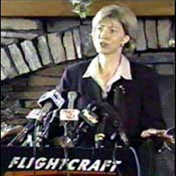 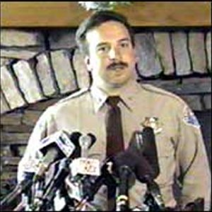 Although Sheriff Evinger was in attendance and said he was still waiting for official word on when the Federal officers would leave, the indication is that the Lt. and Sgt. of Park Police there in Klamath may be gone soon. This is good ... but it is a pittance from a government agency and governmental officials gone amuck. Their stated reasons for "allowing" some water to flow is that they have "discovered" that there is a fott more water in the lake than what they thought, so they can "afford" to release some to the farmers. The water is not theirs to give or take. I pray that our petition will go on ... I pray that efforts to get the entire project under local control will proceed at a quickened and lengthened pace. I pray that the "Stand in Klamath Falls" will be a beginning ... for the farmers in the Klamath Basin and for the rest of our nation. We should make this a template for future activities ... and in the future, the people should not wait as long.
POST SCRIPT 2 - Wednesday, July 25, 2001 The Water is Flowing 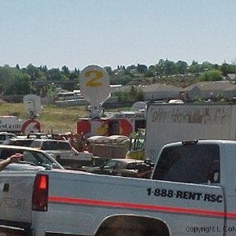 News Arrives in RICH abundance.
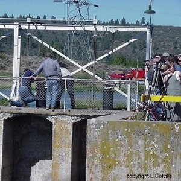 Opening one of the gates
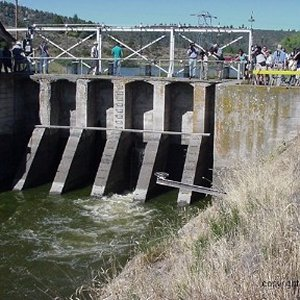 Water Flowing !!! Only one gate is open and it will take a while to charge the irrigation system. Although it is late ... although it will not undo what is done and only allow a partial mitigation of the damages ... although it was done in an attempt (IMHO) to avoid political baggage by the very people who KNOWINGLY hurt these fine families ... yet it brings tears to my eyes! The risks, the sacrifice, the commitment and the bravery and courage of a relative few ... suffering the scorn of their own officials, the betrayal of their government and the potential loss of the liberty and more as a result ... those few have brought this about by their actions and willingness to act for liberty and for what is right. I pray now that they will not let up. That they will make themselves independent of the federal beheamouth for their irrigation water. BUILD THE BYPASS! DO IT NOW! If the people of the west, if the people of the nation, will make the experiences at Klamath Falls their rallying cry and will emulate those actions ... and do it sooner ... they can fend off such liberal and socialistic land grabs and assaults on liberty.
Jeff Head
SIGN THE NATIONAL PETITION FOR THE KLAMATH BASIN CRISIS
CLICK BELOW FOR BOOKS/NOVELS OF INTEREST: 


[Please consider visiting these sites as well] The Attack on America Memorial Site - The Winning Iraqi Freedom Dedicatory Site
Copyright © 2001-2006 by Jeff Head, All Rights Reserved
|